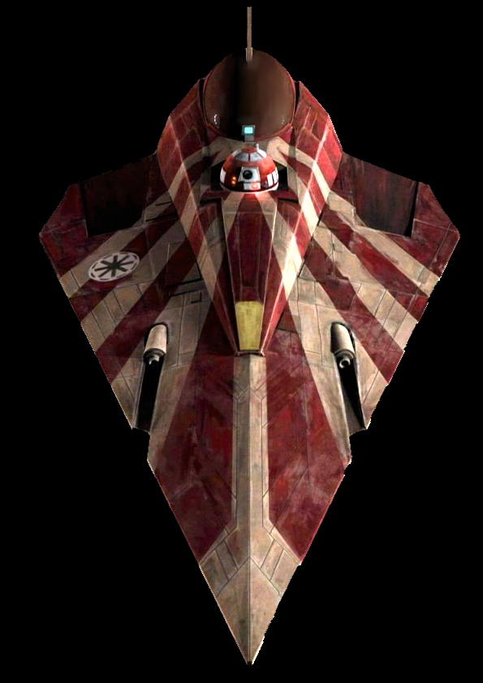

|
 Delta7B könnyű elfogóvadász75 000
|
Delta7B könnyű elfogóvadász történeteA Delta-7 Aethersprite-osztályú könnyű elfogó, ismertebb nevén a Jedi-vadász, egy elfogó volt, amelyet nemsokkal a klónok háborúja előtt kezdtek gyártani YE 22-ben. Tervezője Walex Blissex, aki később megtervezte a Alpha-3 Nimbus-osztályú V-szárnyú vadászgépet, majd Jan Dodonnával az RZ-1 A-szárnyú elfogón dolgozott a Lázadók Szövetsége számára. A kor technológiai korlátai miatt a vadász mérete nem tette lehetővé a beépített hiperhajtőmű alkalmazását, így ehelyett más űrjárművekre vagy külső dokkoló hipergyűrűre kellett támaszkodnia a fénysebesség feletti utazásnál. Felszerelése
|